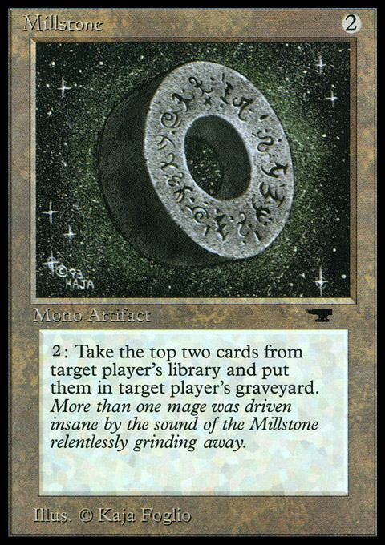

Hej kompisar och haboiter!
Jag har, som ni kanske vet, spelat Magic ganska länge. Som alla andra började jag först väldigt casual, för att sakta skapa lite högre ambitioner. Kvala till SM, gå topp-8 i en PTQ, gå dag 2 på en GP och till slut kanske kanske få spela på touren. Tyvärr kom jag aldrig längre än en PTQ-final och jag har inte spelat annat än side-events på GP-söndagar. Men vid sidan av PT-ambitioner har jag alltid haft en ambition om att ha så roligt som möjligt när jag spelar Magic.
Eftersom "roligt" är ett nollsummespel i Magic har jag alltid haft en fäbless för kombo och prison. Den första lek jag byggde på egen hand var en Bazaar of Wonders-lek med Mill Stone och Soldevi Digger som jag spelade med mina bästisar Peter och Björn våren '97. Målet var att se till att de inte fick spela några spells. Alls.

Samma vår, strax efter Visions släpptes, minns jag att jag Björn satt och bläddrade i Magic Gathering: Official Encyclopedia och plötsligt fick den, för oss, nyskapande idén att proxa lekar och spela mot varandra. Min lek var svartröd och innehöll Sinkhole, Stone Rain, Army Ants, Demonic Hordes och Nether Void. Björns lek var lite baktung och innehöll bl.a. Erhnam och Juzam. Mer minns jag inte för vi spelade bara två dueller. Tydligen är det tråkigt att bli låst under en Nether Void när ens motståndare har en Army Ants i spel.
Sen dess har jag spelat Stasis, Æther Flash / Humility, UG Awakening, Owling Mine, UW Pickles och på senare år Stax och Lantern. Jag äger ett playset Mana Vortex jag fortfarande vill kombinera med Trinisphere någon gång och jag har ställt upp i en lokal turnering på Mindstage med 4 Nether Void i leken.
Med alla dessa förord ur vägen, är jag därför glad att som sällskapets främste prison-connoisseur få presentera Two-Toned Pipe:
Jag gillar det här kortet och skulle verkligen vilja testa det i nån av mina Stax-brews i Legacy. Det jag ser framför mig är att få fuska in pipan någon runda tidigt med en Ancient Tomb och en Mox Diamond eller så. Aktivera i motståndarens uppkeep och sen aktivera i min nästa main-phase för att få droppa fler tax-artefakter. Jag tror att kortet är knappt ett mana för dyrt för att vara bra nog dock i ett så kraftfullt format som Legacy.
Det är däremot svårt att värdera Two-Toned Pipe i ett vakuum. Jag tror nämligen det här kortet är lite för svagt om inte en eller flera av följande premisser gäller för vårt constructed-format:
Om rätt förhållanden råder kan Two-Toned Pipe vara allt från en role-player till en build-around. Jag håller tummarna, men inte andan.